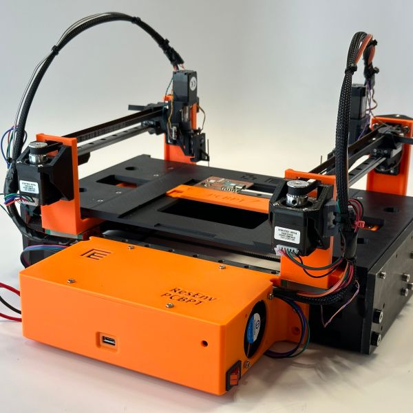

01
Fixtr - PCB probing agent
Work in progress
An automated agent for probing PCBs. Still in development.
- Dual XY gantry with two probes that can interface with different bench tools (oscilloscopes, etc.)
- Closed-loop motion control for repeatable probe placement
- Calibration routine that aligns each probe tip to the camera